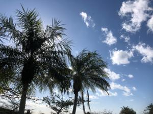
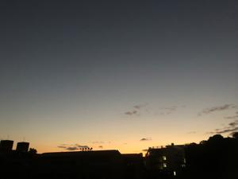
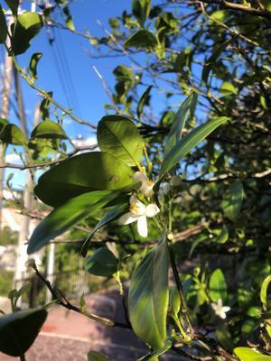

うるがいの話 ある日
最新: 魔がさす瞬間【うるがいの話 ある日】とは 一日だけのプログです
『うるがいの話』の最新一日だけのプログで、通信料が少なく経済的だ。カニの画像をクリックすると全ての日付が載る『うるがいの話』サイトを表示します
|
|
【うるがいの話】 うるがい(ｳﾙｶﾞｲ urugai)とは、『もずくがに』の名前でとても大きくなります。 |
|---|---|
|
|
【カミマヤーの話】 猫のことを方言でマヤーといいます。カミマヤー（kamimayaa）とは、神の猫のことです。 |
|
【たながぁの音楽】 たながぁ（ﾀﾅｶﾞｰ tanagaa）とは手長えびのことで、何種類かあり大きいのは車 エビぐらいになります。 |

|
【ぶながぁの話】 ぶながぁ(ﾌﾞﾅｶﾞｰ bunagaa)とは、赤い髪の毛、赤い身体、そして身長は１ｍ２０ｃｍ ぐらい、川の蟹を食べているの目撃された。場所は沖縄県国頭郡大宜味村のと ある村僕の隣近所に住んでいる爺さんから、聞いた話です。 |
|
|
【ギーマの話】 ギーマ(giima)とは、山原の里山に咲くスズランに似た、 花を付けます。実は食べられます、 気が付くと口の周りが紫になっています。 |
2023年03月01日 (水）魔がさす瞬間
16:17
 
夕ご飯を食べるため、ご飯をお椀に入れようと炊飯器の中を覗くと、アラー少
ない。お椀の８分目しかない、ショック、ま、仕方ないと思いながら何故か（
ここが問題！）少ないご飯を入れたお椀をレンジ台の上に置いた。そして、何
故かそのお椀を落としてしまう。陶器のお椀とご飯は床に落ちる、割れた！。
ショック、だが何事もなかったかのように後片付けをする。仕方ない、カップ
ヌードルを食べるかと、象印保温ジャーから湯を入れる、となんと９割でお湯
が無くなった！、笑うしかない。湯を沸かし、その後沸騰した湯を追加してや
っと夕食を迎える。なぜ、ポットの水の残量を確認しなかったのか？。これっ
て、魔がさす瞬間というのだろうか・・・・。この前、果物さんへ行き、支払
いをするとき、お金を持っていないことに気づき、恥ずかしながらも品物を返
した。これも？、たまたま、図書館から『魔がさす瞬間 危ない自分の心理学
小田 晋／著』を借りて読んでいる、対策がないか気をつけて読もうと思う。

昨日、老人ホームの職員と、ヨメのお母さんがマンションで面談を行った。お
母さんは、ホームに来週からでも入りたいと伝えたらしい。おお！、前進であ
る。あとは、何時入れるかだが、今朝ヨメの話だと、お母さんはきのうの面談
のことは完全に忘れていると言っていた。健忘症が著しく進んでいる。
３月１日は高校の卒業式である、今年もいい天気だ。私の卒業写真は無い。時
々寂しくなる。
１５時０５分 ビットコインの総資産 ￥９、３５４（↑１２１）